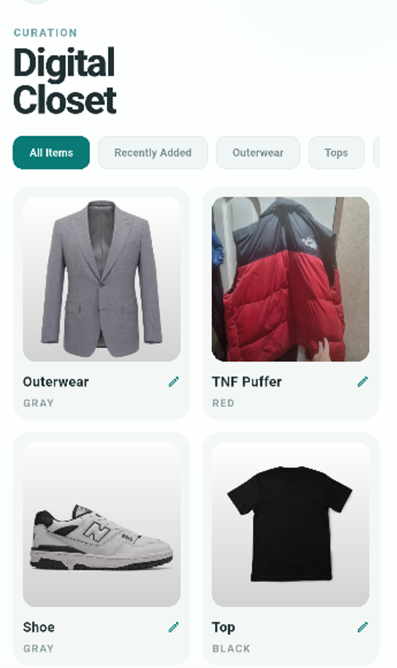
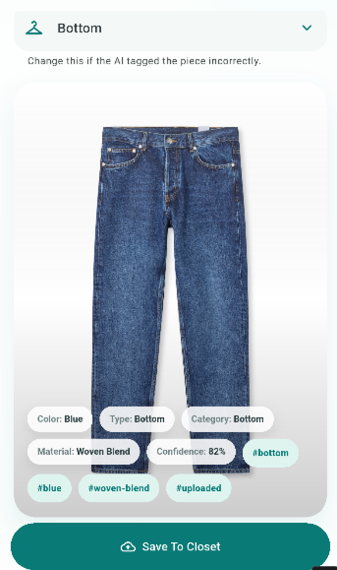
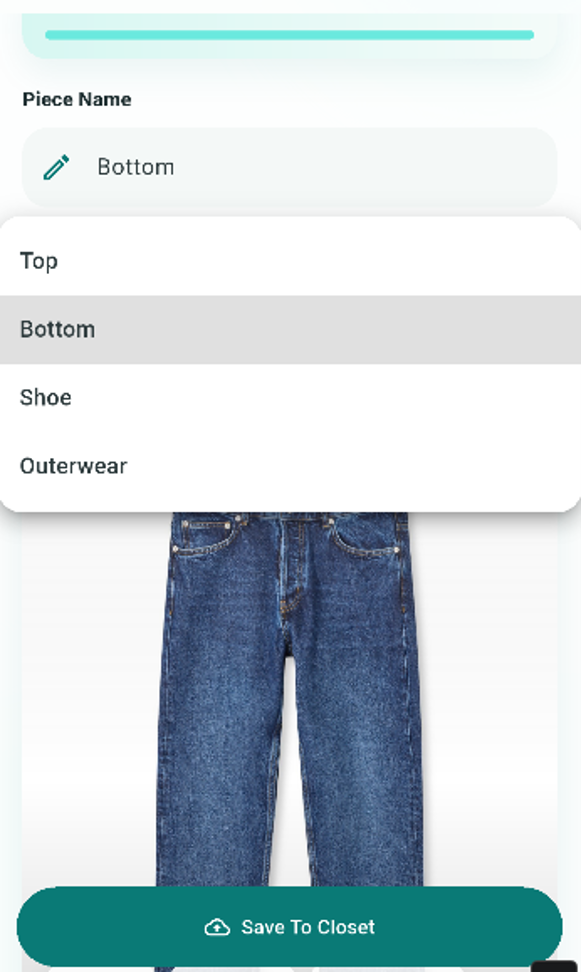
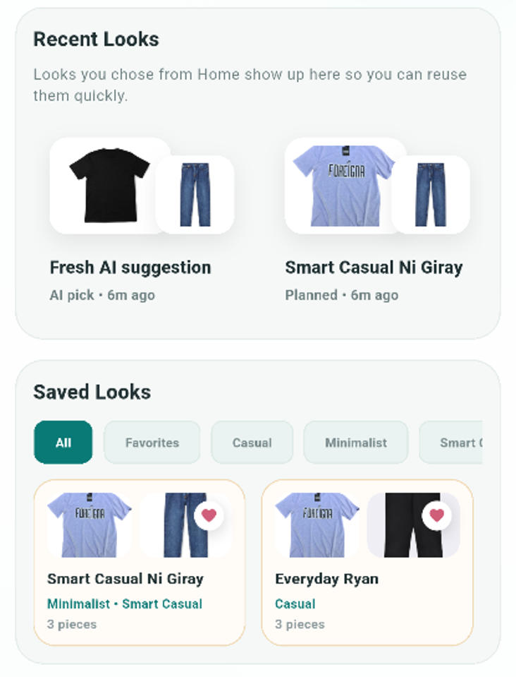
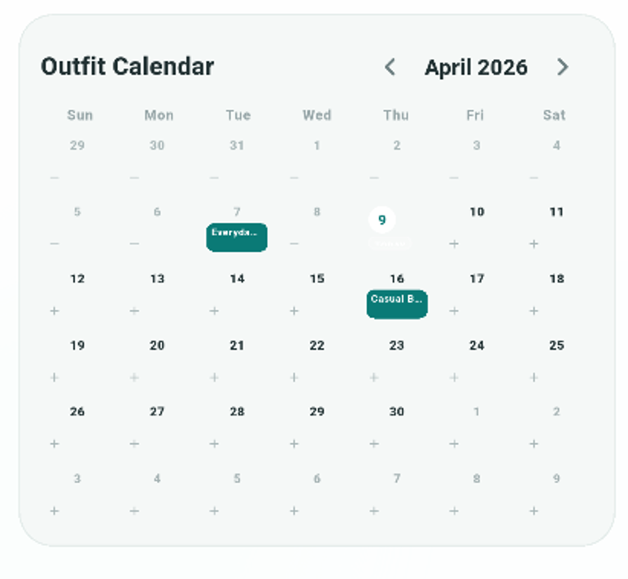

Stylex.
01 // PROJECT SUMMARY
Style without the stress
Stylex is a mobile wardrobe management app that helps users organize clothing, generate outfits, and plan looks in one platform. The academic project is designed to reduce outfit indecision through a more personalized styling experience.
02 // PROJECT DEEP DIVE
A digital closet with assisted styling
Users can upload clothing pieces, receive AI-assisted suggestions for clothing type, color, and material, and correct those details manually when needed. The app can generate combinations from the digital closet, save favorite looks, keep a recent-look history, and let users assign outfits to specific dates through a built-in calendar. Weather-aware suggestions use Open-Meteo, while Supabase manages authentication, database data, and storage. The Flutter interface follows a Model–View–ViewModel structure, with ChangeNotifier connecting UI state to the application logic.
GALLERY





